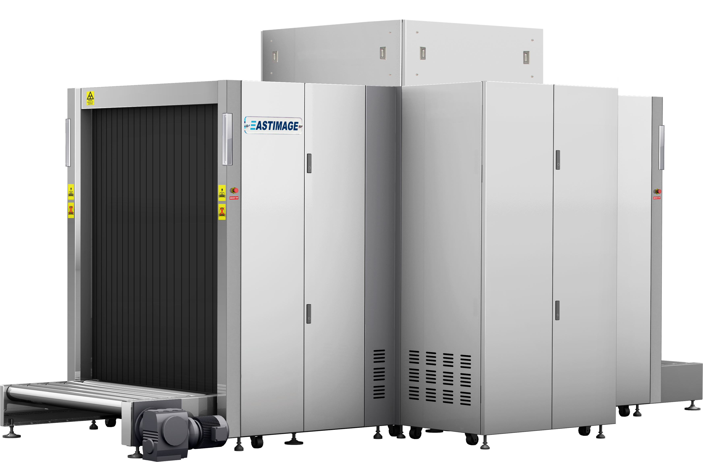

|  |
Product Instruction
Eastimage is a world’s leading security equipment supplier
headquartered in Shanghai, using the high cost-effective security
products and the professional security solutions as our significant
characteristics to stand out from the industry.
EI-V150180DV is a practical large tunnel x-ray security
equipment with dual view which is ideally suitable for large size
luggage inspection like oversized checked baggage, bulky objects
and so on.
EI-V150180DV can display horizontal and vertical images by
two independent generators, therefore operators can identify
overlapping objects and detect out dangerous, illegal objects,
contraband easily and precisely.
|